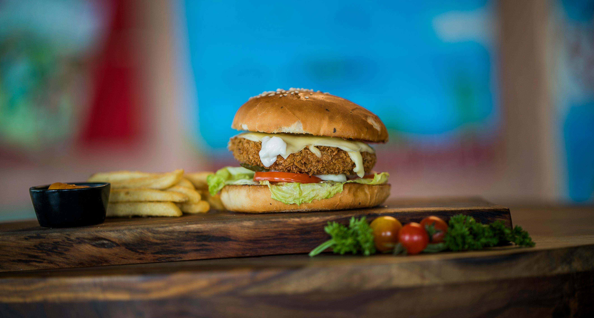

Receitas Vegetarianas Fáceis e Rápidas

Salada de Quinoa
Uma salada leve e nutritiva com quinoa e legumes frescos.

Omelete
Omelete rápida com uma variedade de legumes saborosos.

Lasanha
Uma versão saudável e deliciosa da lasanha tradicional, feita com berinjela.

Suflê
Um suflê leve e cremoso, perfeito para qualquer ocasião e totalmente sem glúten.

Burger
Um burger saboroso e nutritivo, feito com grão-de-bico e temperos.